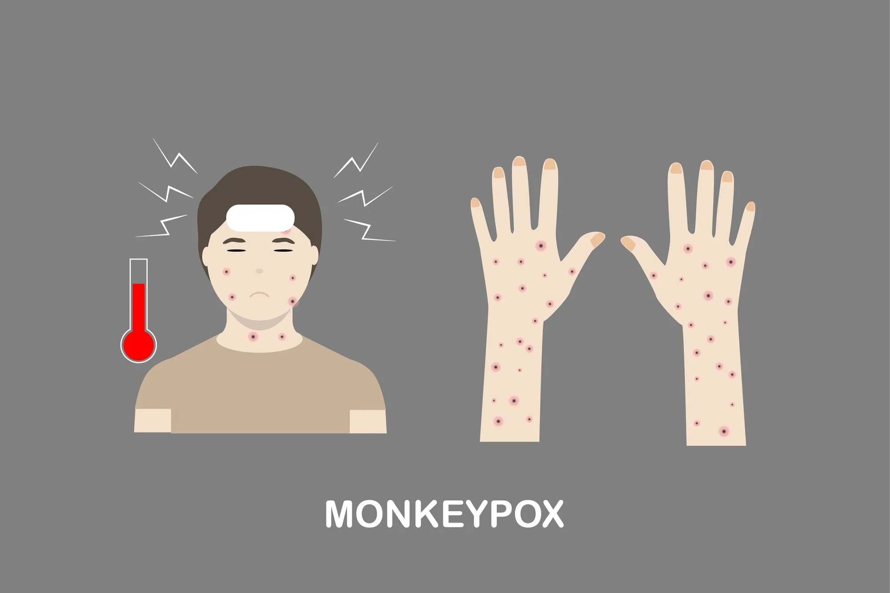

За даними епідеміологів, смертність від вірусу віспи в деяких регіонах планети становила від 30 до 70%. Небезпека вірусу полягає в тому, що передається повітряно-крапельним шляхом, а так само через предмети хворої людини. У хворої людини спочатку піднімалася температура, з'являвся головний біль. Через кілька днів ці симптоми зникали, а натомість – з'являлося безліч вузликово-пузирчастих висипань, що залишають після себе рубці. Враження тканин трахеї, бронхів і альвеол, з подальшим накопиченням вірусу в легенях, і нарешті ураження всіх органів і систем призводило до неминучої загибелі людей. Лише в кінці 17 століття вдалося створити вакцину, яка змогла зупинити поширення смертельного захворювання.
